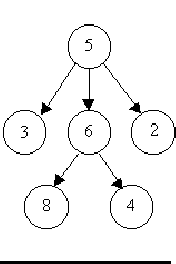
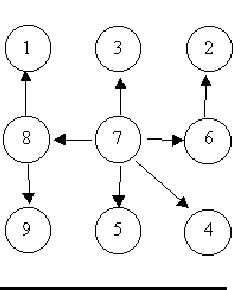
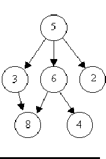

A tree is a well-known data structure that is either empty (null,
void, nothing) or
is a set of one or more nodes connected by directed edges between
nodes satisfying the following properties.
- There is exactly one node, called the root, to which no directed
edges point.
- Every node except the root has exactly one edge pointing to it.
- There is a unique sequence of directed edges from the root to each node.
For example, consider the illustrations below, in which nodes are
represented by circles and
edges are represented by lines with arrowheads. The first two of these are
trees, but the last is not.



In this problem you will be given several descriptions of collections of nodes
connected by directed edges. For each of these you are to determine if
the collection satisfies the definition of a tree or not.
The input will consist of a sequence of descriptions (test cases) followed by a
pair of negative integers. Each test case will consist of a
sequence of edge descriptions
followed by a pair of zeroes Each edge description will consist of a pair
of integers;
the first integer identifies the node from which the edge begins, and the
second integer identifies the node to which the edge is directed.
Node numbers will always be greater than zero.
For each test case display the line ``Case k is a tree."
or the line ``Case k is not a tree.", where k
corresponds to the test case number (they are sequentially numbered starting with 1).
6 8 5 3 5 2 6 4
5 6 0 0
8 1 7 3 6 2 8 9 7 5
7 4 7 8 7 6 0 0
3 8 6 8 6 4
5 3 5 6 5 2 0 0
-1 -1
Case 1 is a tree.
Case 2 is a tree.
Case 3 is not a tree.
Miguel A. Revilla
1999-03-24